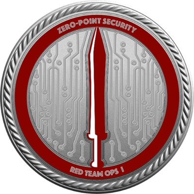
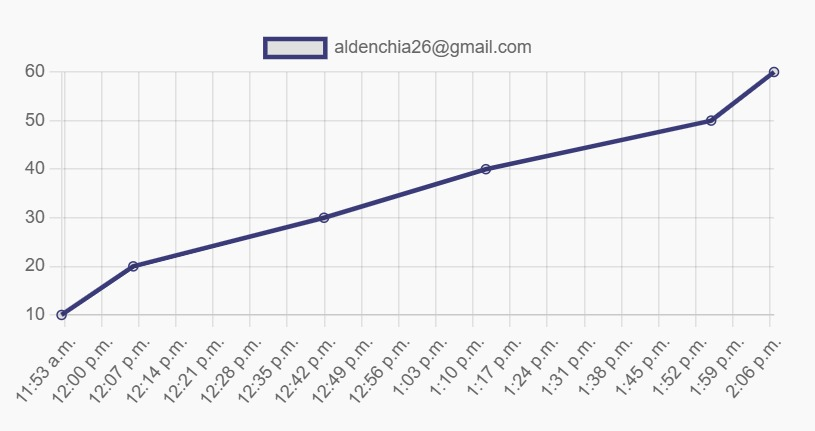
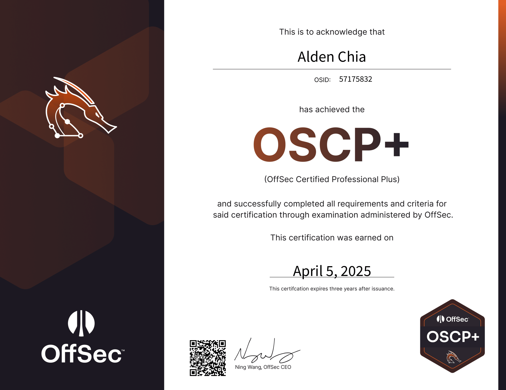
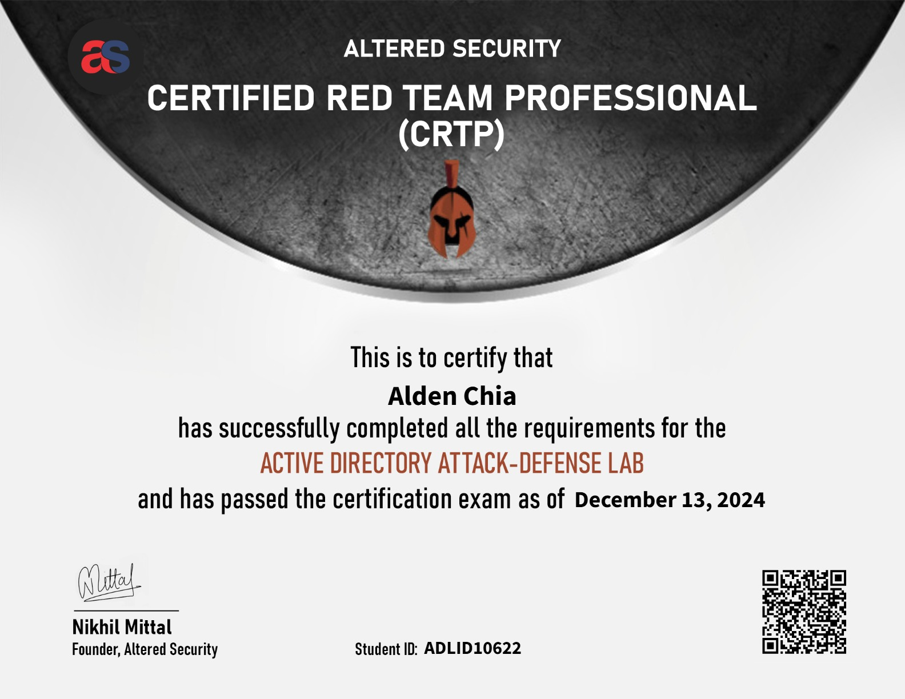
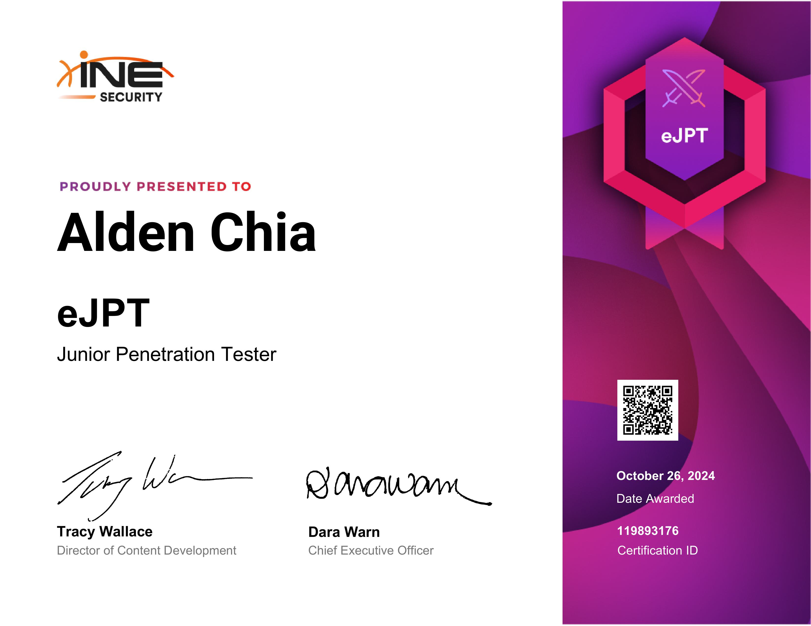
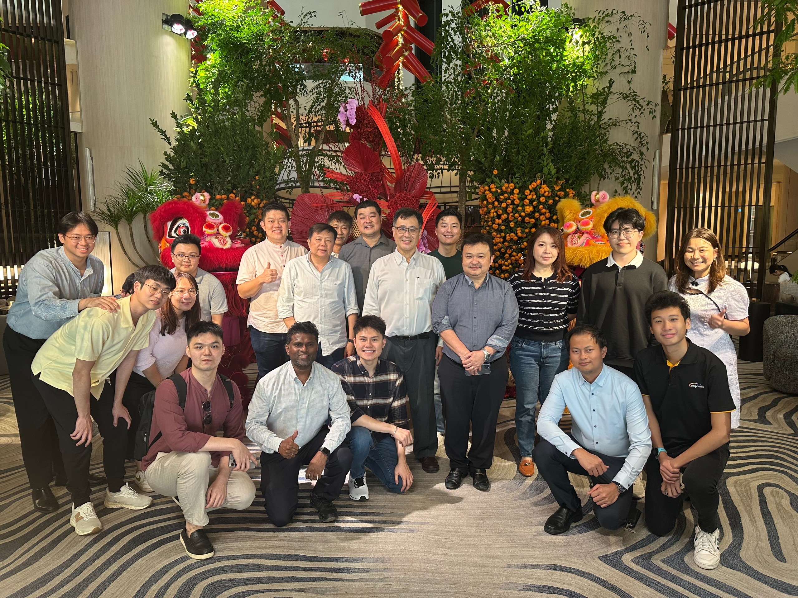

The milestones below highlight the most significant achievements in my cybersecurity journey, showcasing the progress, dedication, and key accomplishments that have defined my path
Expiry: NillCredential ID: 681ab1f2b35e2d0bd2049c5c
This certification highlights my next step in Active Directory pentesting. I really enjoyed the course materials, labs, and exam. Using Cobalt Strike as my C2 was something new to me, and it made the whole experience feel gamified.


Expiry: 3 years
Completing the OSCP+ was a major milestone I set for myself, and I'm proud to have achieved it before turning 20. This certification represents the beginning of my offensive security journey, not the end. I'm excited for the challenges ahead as I continue to sharpen my skills and grow into a skilled Red Teamer.

Expiry: 3 years
Achieving CRTP helped me meet my personal goal of earning two certifications before 2025. Diving into Active Directory penetration testing sparked a deep interest in this area, and I'm looking forward to exploring more AD-focused certs in the near future.

Expiry: 3 years
This was my very first penetration testing certification and a crucial stepping stone. I treated it like a warm-up challenge to build confidence before tackling more advanced certs. Shoutout to a close friend who encouraged me to step out of my comfort zone and go for it.

Position: Associate System Engineer
I completed a 22-week internship at Argentra Solutions Pte. Ltd. as part of my final semester. During my time there as a Associate System Engineer, I worked primarily on automation tasks, learning scripting and tools like Ansible. It was an enriching experience that deepened my interest in systems and virtualization.

cGPA: 3.85Graduated with a Diploma with Merit
Certificate in Data and AnalyticsAwards: Director's Honor Roll 2022/23 & 2023/24
Graduating with a Diploma with Merit in DISM from Singapore Polytechnic has been a rewarding journey. I was honored to make the Director's Honor Roll for both 2022/23 and 2023/24. This diploma laid the foundation of my cybersecurity knowledge and inspired me to pursue offensive security as a career path.